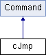

Безусловный переход Подробнее...
#include <command.h>
Граф наследования:cJmp:

Открытые члены | |
| int | operator() (Computer *COMP) |
| cJmp::operator () - Безусловный переход Подробнее... | |
Дополнительные унаследованные члены | |
 Защищенные члены унаследованные от Command Защищенные члены унаследованные от Command | |
| void | loadRegister (Computer *COMP) |
| Command::loadRegister - загрузка внутреннего регистра Подробнее... | |
Подробное описание
Безусловный переход
Методы
§ operator()()
|
virtual |
cJmp::operator () - Безусловный переход
- Аргументы
-
COMP - указатель на объект компьютер
- Возвращает
- 1
Изменяет значение указателя на инструкцию по абсолютному значению адреса ОЗУ, либо отступа от текущего значения.
Замещает Command.
void debug(QString)
Передача сообщения для последующего вывода в лог
Definition: computer.cpp:221
Объявления и описания членов классов находятся в файлах:
- C:/Users/sstarkov/Documents/kr_InterpreterVM/sources/command.h
- C:/Users/sstarkov/Documents/kr_InterpreterVM/sources/command.cpp